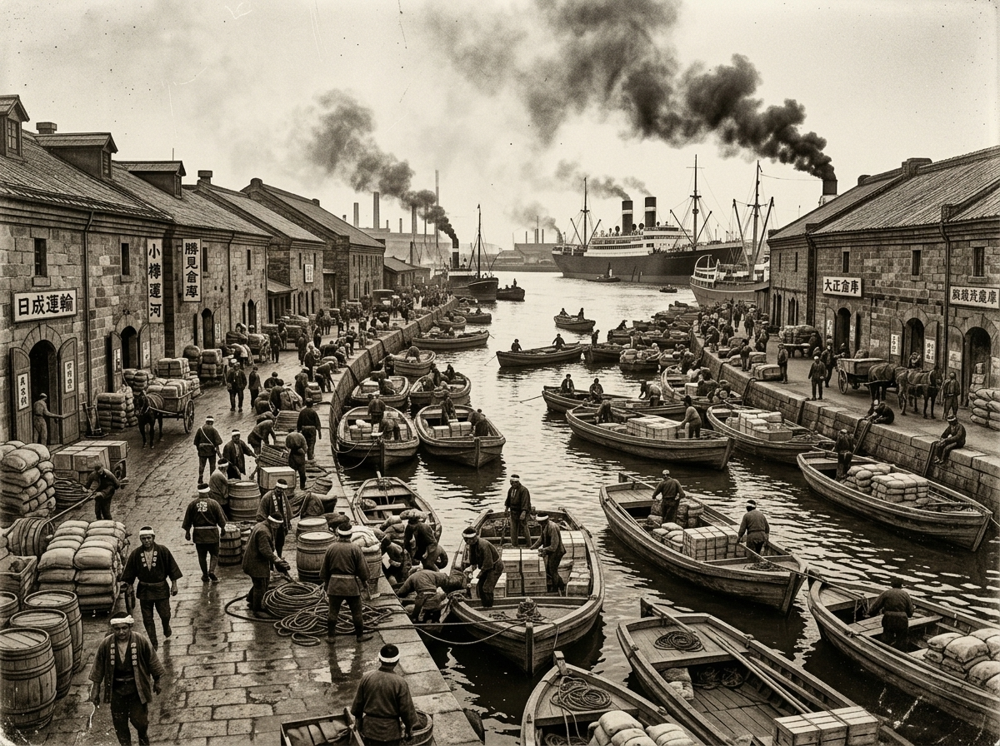
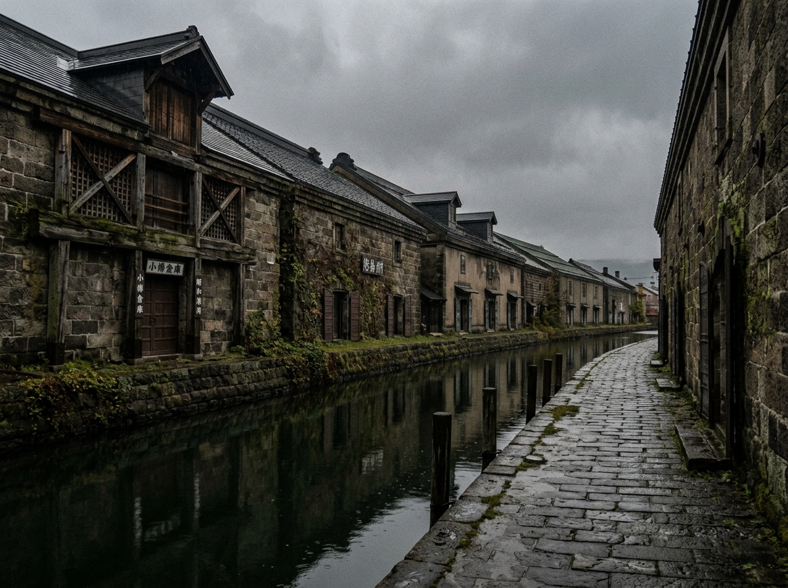
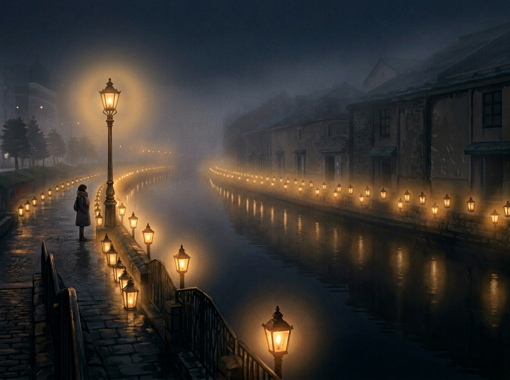

What the Canal Was Before It Learned to Be Beautiful
by Kiri
As dusk settles in, that city begins to breathe differently.
Otaru, Hokkaido. Standing at the edge of its old canal, you watch the gas lamps ignite — one, then another — until amber light trembles across the water. Tourists press their phones against the glow, chasing the perfect frame. I understand the impulse. It is a beautiful scene.
But almost no one standing there tonight knows that this quiet canal was once the thundering heart of northern Japan.
That's the part worth knowing.
An afternoon in the archives
Winding the spring of a stopped clock
My feet were tired, so I slipped into the local history room of the city library. Quiet. Smelling of old paper. The kind of place a cat can think clearly.
I spent the afternoon turning pages — yellowed port records, century-old newspapers, stacks of sepia photographs. Winding the spring of a stopped clock, I thought, as the pages turned. And slowly, a world utterly unlike the polished tourist destination outside began to rise from the paper.
The canal we see today was not always dressed for company. What stands before us now is just one scene from a very long life.
Before the silence
Imagine Liverpool, Hamburg, New York — in northern Japan
The Otaru in those photographs was astonishingly loud, and it smelled of coal smoke. Massive steamships crowded the harbor. Flat-bottomed lighters — hashike — packed the canal so tightly there was barely room for water between them. Men moved cargo through sheer physical force. Stone warehouses rose in dense rows. Black smoke erased the sky.
Imagine Liverpool during the age of empire.
Imagine Hamburg when ships connected continents.
Imagine New York before the skyscrapers.
Then imagine all of that happening in northern Japan.
That was Otaru. The same overwhelming energy that defined the great port cities of the world had somehow concentrated itself in this small northern harbor. Which, if you think about it, is rather extraordinary.

Otaru Canal in the 1920s — hashike lighters crowding the waterway at the height of the port's industrial energy.
The canal was never meant to be beautiful
Yo no bi — the beauty of function
Let's be clear about something.
This canal was not built to charm anyone. It was built as pure logistics infrastructure — a utilitarian machine for moving goods efficiently. No ornamentation. No concession to aesthetics. Just a blunt instrument designed to work for decades without complaint.
Which is precisely why it has a certain beauty.
There is a Japanese concept — yo no bi, the beauty of function — and this canal embodies it completely. Nothing here is performing for your approval. It simply is what it was made to be. Like the best art posters, actually: the ones worth hanging are never the ones trying too hard to impress. They carry something real inside them, and that realness is not easily faked.
…Though I suppose not everyone notices the difference. That's fine.
The years that drifted away
Prosperity can quietly change its address
Advance the archive records by a few decades, and the atmosphere shifts.
Fewer ships. Warehouse doors, closed. The word prosperity quietly vanishing from newspaper headlines. Without anyone quite announcing it, the wealth and the center of gravity had migrated to Sapporo next door.
Like many port cities around the world, Otaru discovered that prosperity can quietly change its address.
It's a story that repeats itself across maritime history — the city that was everything, gradually becoming the city that was. The canal didn't disappear overnight. It simply… grew still.

Stone warehouses in mid-Shōwa era Otaru — the bustle gone, the architecture intact but the purpose hollowed out.
The canal that refused to disappear
Efficiency versus memory, a decade-long argument
For a time, the canal was treated as exactly what it had become: an obstacle.
When plans emerged to fill half of it in and pave it over for a road, the local newspapers ran hot with argument for years. Tear it down, modernize. No — preserve it, remember. The preservation movement lasted over a decade. An unglamorous, grinding debate between efficiency and memory.
If the efficiency side had won completely, none of what you see today would exist.
This canal did not merely survive. It was kept here, actively, by people who decided that forgetting was not an option. There is a meaningful difference between those two things.
When the 63rd light appears
Where the archive room overlays the present
Full darkness over Otaru now. The gas lamps ignite in sequence, and when the 63rd flame catches—
On nights when the fog rolls in heavy, something interesting happens.
Through the soft blur of the light, the images from the archive room begin to overlay what's in front of you. Steamships that no longer exist. The rough breath of cargo workers. Iron-rimmed wheels on stone. The canal holds all of it somehow, just below the surface of the water.
When the gas lamps come on, the city begins, quietly, to remember.

Otaru Canal at night — 63 gas lamps reflected in still water, the fog blurring present and memory together.
What the lights really illuminate
The quiet decision not to forget
Most visitors leave Otaru saying the gas lamps were lovely. The stone warehouses were nostalgic. They're not wrong.
But what is actually beautiful is not the scene itself.
It's what clings to the back of the scene — over a century of human effort, economic rise and fall, civic argument, and the quiet decision to remember rather than erase.
If you hung a monochrome version of this on your wall, I suspect you'd find that time moves differently in that room. Slower, perhaps. More deliberately.
The gaslights do not illuminate the canal alone.
They illuminate the memory of a city that once stood at the center of the north.
And chose not to forget.
…
…I've talked rather a lot, haven't I.
If the old photographs interest you, take your time with them. I'll be over in my favorite chair, getting some rest.